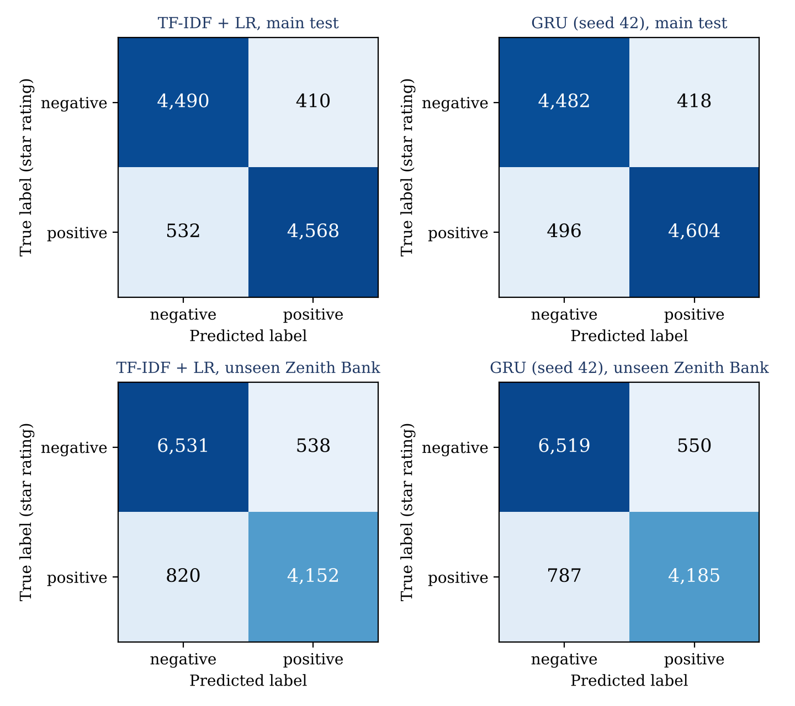

Abstract. This project compares two pipelines for classifying Google Play reviews of Nigerian banking apps as positive or negative: TF-IDF features with logistic regression, and trainable word embeddings with a single GRU layer. Labels come from star ratings (1–2 negative, 4–5 positive). From 334,415 public reviews of 16 banks, a cleaned, de-duplicated sample of 100,000 English reviews from 15 banks was split 80/10/10; all reviews of a sixteenth bank, Zenith Bank (12,041), were held out as an unseen-bank test. On the main test set the GRU reached a macro-F1 of 0.908 ± 0.002 over three seeds against 0.906 for logistic regression. On the unseen bank both fell to about 0.884. McNemar’s test found no significant difference between the models on either set, while the GRU needed about 117 times more training time on a CPU. Reading 150 errors suggests that most remaining mistakes come from ratings that contradict the text or from texts without clear sentiment.
Customer reviews of banking apps show what users find frustrating or useful, but they arrive in large numbers and are written informally. Automatic sentiment classification can sort them at scale. This project classifies each whole review, which may contain several sentences, as positive or negative.
Research question. How do a TF-IDF + logistic regression pipeline and a trainable-embedding GRU pipeline compare in classification quality and computational cost on reviews of Nigerian banking apps?
Hypothesis. The GRU reads words in order and might handle some context-dependent expressions, such as negation and contrast, better. Logistic regression may still be competitive at much lower cost. Either could win. Because the two pipelines differ in representation and training as well as in word order, a difference between them does not isolate the effect of word order.
Extension. Following the instructor’s advice to add a modest extension once the core comparison worked, both models were also tested on reviews of a bank that was entirely absent from training. This asks whether the classifiers learned general sentiment language or partly relied on bank-specific vocabulary.
The data is the Nigerian Banks: Bank Reviews Dataset Collection published by Federal University Lokoja on Hugging Face under the Apache-2.0 licence, pinned to revision 27d2b6e. According to its dataset card, the reviews were collected from Google Play, from each app’s launch until 2024, and are tagged as English. There are 16 CSV files, one per bank’s mobile app, with three fields: content (review text), score (1–5 stars) and year (2012–2024). The bank of each review was taken from its file name.
The banking services are Nigerian, which meets the course requirement for an Africa-related dataset. Row-level reviewer location is not available, so the data cannot show that every reviewer is Nigerian.
Ratings 1–2 were labelled negative (0) and 4–5 positive (1); 3-star reviews were excluded. These are weak labels derived from ratings, not human sentiment judgments. Only the review text was given to the models; rating, year and bank were never used as inputs.
| Step | Reviews remaining | Removed |
|---|---|---|
| Raw rows, 16 files | 334,415 | – |
| Non-empty text, ratings 1, 2, 4, 5 | 312,104 | 22,311 |
| One row per normalized text | 197,676 | 114,428 |
| Texts with conflicting labels removed | 196,317 | 1,359 |
| English filter | 193,793 | 2,524 |
| Near-duplicates removed | 186,902 | 6,891 |
| Zenith Bank held out (12,041) and texts shared with it dropped (1,112) | 173,749 | 13,153 |
| Seeded stratified sample for the main experiment | 100,000 | 73,749 |
Table 1. From raw reviews to the modelling data. Counts up to 196,317 reproduce an earlier inspection of the same files exactly.
| Set | Reviews | Negative | Positive | Use |
|---|---|---|---|---|
| Train | 80,000 | 39,208 | 40,792 | Fitting models and vocabularies |
| Validation | 10,000 | 4,902 | 5,098 | Choosing settings, early stopping |
| Test | 10,000 | 4,900 | 5,100 | Final evaluation, 15 known banks |
| Unseen Zenith Bank | 12,041 | 7,069 | 4,972 | Final evaluation, unseen bank |
Table 2. Data sets. Each main split is 51.0% positive; the Zenith set is 41.3% positive.
Reviews are short: the median training review has 12 words, and 99% have 89 words or fewer. Banks are unevenly represented, from UBA (24,170 reviews in the sample) to Unity Bank (307).
Majority-class reference. Always predicts the most frequent training label (positive).
TF-IDF + logistic regression. Each review becomes a vector of TF-IDF values computed from the training texts only (lowercased, sublinear term frequency, terms in at least 2 reviews). TF-IDF values are input features. Logistic regression then learns one weight per feature from the labels. No stop words were removed, so negation words such as “not” and “never” remain. A fixed grid of six settings was compared on validation: unigrams or unigrams + bigrams, and regularisation strength C ∈ {0.25, 1, 4}.
Embeddings + GRU. Reviews are tokenized into words, punctuation and emoji. The vocabulary comes from training data only: tokens seen at least twice, plus padding and unknown tokens (10,516 entries). Each review keeps its first 100 tokens, which truncates 1.0% of training reviews. Token ids pass through a 100-dimensional embedding trained from scratch, then one GRU layer with 128 hidden units (Cho et al., 2014). The GRU’s hidden state at the last real token goes through dropout (0.3) and one linear output. Sequences are packed, so padding is never read. Training used binary cross-entropy with logits, Adam (learning rate 0.001), batch size 64 and gradient clipping at 1.0. Training stopped after two epochs without improvement in validation macro-F1 (maximum 10), keeping the best epoch. The model has 1,140,049 trainable parameters. Three runs with seeds 42, 1 and 2 measure run-to-run variation.
A first run on all 16 banks, reported in the progress report, gave similar validation scores. After Zenith Bank was held out, the splits were rebuilt and every model was retrained; only the retrained models are reported below.
Unigrams + bigrams with C = 4 gave the best validation macro-F1 (0.908, 92,416 features); unigrams alone peaked at 0.902 (C = 1). C = 4 lies at the edge of the grid; the grid was not widened, to keep the tuning budget fixed. The three GRU runs reached validation macro-F1 of 0.909, 0.909 and 0.909, stopping at epochs 3, 2 and 4.
| Model | Macro-F1 | Accuracy | Negative F1 | Positive F1 |
|---|---|---|---|---|
| Majority class | 0.338 | 0.510 | 0.000 | 0.675 |
| TF-IDF + logistic regression | 0.906 | 0.906 | 0.905 | 0.906 |
| GRU, seed 42 | 0.909 | 0.909 | 0.907 | 0.910 |
| GRU, seed 1 | 0.907 | 0.907 | 0.907 | 0.906 |
| GRU, seed 2 | 0.910 | 0.910 | 0.909 | 0.912 |
| GRU, mean ± s.d. | 0.908 ± 0.002 | 0.908 |
Table 3. Main test set: 10,000 reviews from the 15 training banks.
Both models far exceed the majority-class reference and score evenly across the two classes. The GRU’s mean advantage (0.002 macro-F1) is about the size of its own seed-to-seed spread. Logistic regression made 271 errors that the GRU avoided, and the GRU made 243 that logistic regression avoided; McNemar’s test gives χ² = 1.42, p = 0.23. There is no evidence that either model makes fewer errors.
| Model | Training time | Inference, 10,000 test reviews | Peak memory | Parameters |
|---|---|---|---|---|
| TF-IDF + logistic regression | 2.6 s | 0.18 s | 351 MB | 92,417 |
| GRU (mean of 3 runs) | 300 s (236–359) | 1.11 s | about 960 MB | 1,140,049 |
Table 4. Cost on the same 2-core CPU. Logistic regression parameters = one weight per feature plus a bias.
On this hardware the GRU took about 117 times longer to train and about 6 times longer to predict, with roughly 2.7 times the peak memory. A GPU would shrink the GRU’s training time, so these ratios are specific to CPU-only training.
| Model | Macro-F1 | Accuracy | Negative F1 | Positive F1 |
|---|---|---|---|---|
| Majority class | 0.292 | 0.413 | 0.000 | 0.585 |
| TF-IDF + logistic regression | 0.883 | 0.887 | 0.906 | 0.859 |
| GRU, mean ± s.d. of 3 runs | 0.884 ± 0.001 | 0.888 | 0.907* | 0.862* |
Table 5. Unseen Zenith Bank: 12,041 reviews from a bank absent from training and validation. *Seed 42.
Both models still work on a bank they never saw, but macro-F1 drops by about 0.02. The drop comes mostly from positive reviews: positive recall falls to 0.835 (logistic regression) and 0.842 (GRU, seed 42), against about 0.90 on the main test. Negative F1 is unchanged. The two models again tie (McNemar χ² = 0.59, p = 0.44). Because the Zenith set is 59% negative, the majority-class reference (which predicts positive) scores even lower here. One held-out bank cannot show that the models generalise to every bank.

Figure 1. Confusion matrices. Rows are true labels from star ratings; columns are predictions.
Review types were identified with simple word rules (for example, a contrast word such as “but” or “however”). They are rough signals; a review can belong to several types.
| Review type (main test) | Reviews | LR error rate | GRU error rate |
|---|---|---|---|
| All reviews | 10,000 | 9.4% | 9.1% |
| Contains negation (not, no, never, n’t…) | 3,735 | 10.3% | 9.4% |
| Contains contrast (but, however…) | 1,468 | 14.6% | 12.8% |
| Very short (1–3 words) | 769 | 9.0% | 10.1% |
| Truncated (over 100 tokens) | 107 | 14.0% | 11.2% |
| Pidgin markers (dey, abeg, wahala…) | 109 | 7.3% | 9.2% |
Table 6. Error rate by review type; GRU = seed 42.
Reviews with contrast words are the hardest for both models. The GRU makes somewhat fewer errors on contrast and negation, in line with the hypothesis, and logistic regression does slightly better on very short reviews. These gaps are small and the overall difference is not significant, so they are suggestive only. The truncated and Pidgin groups are too small for conclusions. Logistic regression partly captures negation through bigrams: “not bad” is among its 15 most positive features, while “not” alone is among the most negative.
150 reviews were drawn at random from the test reviews that at least one model got wrong. Each was read and placed in one main category. The first-pass categories were assigned with AI assistance (see Section 8).
| Category | Both wrong | LR only | GRU only | Total |
|---|---|---|---|---|
| Text contradicts the rating | 46 | 8 | 7 | 61 (41%) |
| Genuine model error | 20 | 16 | 11 | 47 (31%) |
| No clear sentiment (question, request, name) | 12 | 7 | 5 | 24 (16%) |
| Mixed opinion | 9 | 8 | 1 | 18 (12%) |
| Total | 87 | 39 | 24 | 150 |
Table 7. Categories of 150 sampled errors.
The largest category is not a model failure. In 41% of sampled errors, the text contradicts its star rating, for example a five-star “This app is useless…” or a one-star “Very good app it’s good to use”. When both models are wrong, this is the most common reason (46 of 87). A further 16% have no clear sentiment, such as “How do I register for the mobile?”. Only about a third are clear mistakes by the model. The rating-derived labels therefore put a ceiling on measured accuracy, and some measured errors are probably correct readings of the text.
Disagreements between the models illustrate their differences. The GRU was right and logistic regression wrong on “It’s not a pleasant one. Network always acting up” (negative) and “This app is too difficult to use” (negative). Logistic regression was right and the GRU wrong on “It’s not bad. But network becomes a problem at times.” (positive) and “I don’t like what i see” (negative). Neither model handles negation reliably.
Answer to the research question. On these reviews the two pipelines are equal in classification quality: macro-F1 0.906 versus 0.908 on the main test and 0.883 versus 0.884 on an unseen bank, with no significant difference. They differ greatly in cost, with logistic regression training about 117 times faster on a CPU and predicting about 6 times faster. For this task and data size, logistic regression is the more practical choice. The GRU’s possible advantage on contrast and negation is small and would need more evidence.
Why the GRU does not pull ahead. Most reviews are short (median 12 words), so word order matters less than in long texts, and sentiment is often carried by a few strong words that bigram features already capture. Label noise also limits any model: if about four in ten remaining errors are rating–text contradictions, the attainable accuracy is well below 100%. Finally, the GRU learns its embeddings from scratch on 80,000 reviews, without pretrained word knowledge.
Limitations.
On 100,000 Google Play reviews of 15 Nigerian banks, TF-IDF with logistic regression and a single-layer GRU reached the same quality (macro-F1 about 0.91). Both kept most of that quality on reviews of an unseen bank (about 0.88). Logistic regression was far cheaper to train and run. The main obstacle to higher scores appears to be the labels rather than the models: many remaining errors involve reviews whose text and rating disagree. Natural next steps would be human-checked labels for a test sample, pretrained embeddings or a small pretrained Transformer, and testing on more held-out banks.
ASSISTANCE_LOG.md) is included with the code.Code and reproducibility. The submitted code.py runs the whole experiment end to end with python code.py: it reads dataset.csv from its own folder, trains and evaluates both models, and writes all results to a results folder (about 15–20 minutes on a 2-core CPU). python code.py --rebuild-data first recreates dataset.csv from the raw Hugging Face files; this was checked to give an identical file. The development version, split into one script per stage, and every intermediate result are at https://github.com/mbengue0/nigerian-bank-sentiment.